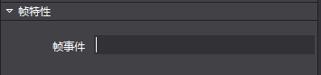
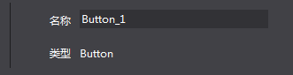
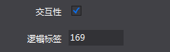
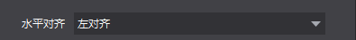
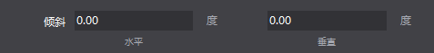
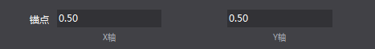

属性扩展
注意：2.3.3.0版本对属性区相关接口进行了调整，详情请见 2.接口变更
1.属性区扩展
Cocos Studio预置的控件支持扩展，对于控件的属性区同样支持扩展。一些基本类型的属性，编辑器中已经包含对应的属性控件，只需要按照一定规则即可使用。如果使用者想要扩展自定义属性，可以根据自己意愿制作需要的功能(示例代码中有详细介绍)。
Cocos Studio预置控件
string 类型

帧事件这个属性是一个string类型，内容是一个可以输入的文本，不限制文本的输入格式，可以随意输入，可为空。
范例：
string customString = string.Empty;
[UndoPropertyAttribute] //允许撤销回退，不允许则不添加
[DisplayName("字符串")]//Label显示文本
[Category("Custom_Plug")]//属于哪个分组
[PropertyOrder(0)]//在分组的排序，例如，1在0之后
[Browsable(true)]//是否显示当前属性，不允许则设置为false 或者不添加这个属性戳
public string CustomString
{
get { return customString; }
set
{
if (customString != value)
{
customString = value;
//如果允许记录撤销记录，则调用属性通知，如果不需要记录，则不添加
this.RaisePropertyChanged(() => this.CustomString);
}
}
}

名称这个属性是一个string类型，内容是一个可以输入的文本，不限制文本的输入格式，可以随意输入，但是不能为空，如果为空，恢复上一次保存的值，若要使用这类文本框，则要调用ValidTextEditor。
范例：
[UndoPropertyAttribute]
[DisplayName("ValidTextBox")]
[Editor(typeof(ValidTextEditor), typeof(ValidTextEditor))] //这里的Editor是制定特定的类型控件，这些控件属于自己写的，非系统原生
[Category("Custom_Plug")]
[PropertyOrder(0)]
[Browsable(true)]
public string ValidTextBoxString { get; set; }
int 类型
逻辑标签这个属性是一个int类型，内容是一个可以输入数字的控件，限制只能输入数字，最大限制默认是正负9999999，在程序中可以通过SetMaxMin进行设置。
范例：
int customInt = 0;
[UndoPropertyAttribute]
[DisplayName("整数")]
[Category("Custom_Plug")]
[PropertyOrder(1)]
[Browsable(true)]
public int CustomInt
{
get { return customInt; }
set
{
if (customInt != value)
{
customInt = value;
this.RaisePropertyChanged(() => this.CustomInt);
}
}
}
bool 类型

可见性这个属性是一个bool类型，类型是一个checkbox，可以进行选择和不选择。
范例：
bool customBool = false;
[UndoPropertyAttribute]
[DisplayName("布尔")]
[Category("Custom_Extend")]
[PropertyOrder(4)]
[Browsable(true)]
public bool CustomBool
{
get { return customBool; }
set
{
if (customBool != value)
{
customBool = value;
this.RaisePropertyChanged(() => this.CustomBool);
}
}
}
enum 类型

水平对齐这个属性是一个enum枚举类型，类型是一个下拉combox，可以选择不同的枚举项。
范例：
// 枚举定义示例，实际使用时请将枚举的定义放到 ViewModel 类外面，和 ViewModel 平级。
// 参见示例工程中 WeekdayEnum 枚举的定义。
public enum CocosEnum
{
None,
Fir,
Sec,
Thi
}
CocosEnum customEnum = CocosEnum.None;
[UndoPropertyAttribute]
[DisplayName("枚举")]
[Category("Custom_Plug")]
[PropertyOrder(5)]
[Browsable(true)]
public CocosEnum CustomEnum
{
get { return customEnum; }
set
{
if (customEnum != value)
{
customEnum = value;
this.RaisePropertyChanged(() => this.CustomEnum);
}
}
}
Color 类型
颜色混合这个属性是一个Color类型，类型是一个组合控件，可以选择不同的颜色。
范例：
System.Drawing.Color customColor = System.Drawing.Color.White;
[UndoPropertyAttribute]
[Editor(typeof(ColorEditor), typeof(ColorEditor))]
[DisplayName("颜色")]
[Category("Custom_Extend")]
[PropertyOrder(6)]
[Browsable(true)]
public System.Drawing.Color CustomColor
{
get { return customColor; }
set
{
if (customColor != value)
{
customColor = value;
this.RaisePropertyChanged(() => this.CustomColor);
}
}
}
ScaleValue 类型

倾斜这个属性是一个ScaleValue类型，类型是一个组合控件，可以分别设置X和Y的值，并且可以在属性中设置最大值最小值和每次鼠标滚轮幅度。
范例：
ScaleValue customScaleValue = new ScaleValue(1, 1);
[UndoPropertyAttribute]
[Editor(typeof(CustomEditor), typeof(CustomEditor))] // CustomEditor 的源代码可以在示例工程中找到。
[ValueRange(int.MinValue, int.MaxValue, 1)]//ValueRange属性是设置控件最大值最小值和幅度
[DisplayName("ScaleValue")]
[Category("Custom_Extend")]
[PropertyOrder(7)]
[Browsable(true)]
public ScaleValue CustomScaleValue
{
get { return customScaleValue; }
set
{
if (customScaleValue != value)
{
customScaleValue = value;
this.RaisePropertyChanged(() => this.CustomScaleValue);
}
}
}
PointF 类型

锚点这个属性是一个PointF类型，类型是一个组合控件，可以分别设置XY的值。
范例：
/*PointFEditor和ScaleValueEditor的内容一致，
只是在其中需要类型的强制转换，Point和ScaleValue两种强类型，
在控件内做处理太繁杂，单一原则，把这两个类型写成了两个控件*/
PointF customPointF = new PointF(1, 1);
[UndoPropertyAttribute]
[Editor(typeof(PointFEditor), typeof(PointFEditor))]
[ValueRange(int.MinValue, int.MaxValue, 1)]//ValueRange属性是设置控件最大值最小值和幅度
[DisplayName("ScaleValue")]
[Category("Custom_Extend")]
[PropertyOrder(7)]
[Browsable(true)]
public PointF CustomPointF
{
get { return customPointF; }
set
{
if (customPointF != value)
{
customPointF = value;
this.RaisePropertyChanged(() => this.CustomScaleValue);
}
}
}
CustomObject这个范例文件中，一些已经提供的属性，用户添加了这些属性后，需要在CustomObjectData 类中添加相应的属性，这样属性才能在关闭编辑器后保存起来，下次打开文件读取之前保存的属性。
例如：
[ItemProperty]
[JsonProperty]
public int CustomInt { get; set; }
具体的代码在CustomObjectData已经添加。
编写一个自定义控件
CustomEditor是一个可以编辑ScaleValue类型的属性编辑器，它继承自BaseEditor，BaseEditor则继承自IPropertyEditor接口。
BaseEditor中已对IPropertyEditor接口进行了实现，但子类在继承BaseEditor时，依然需要重写其中的一些方法，其中必须要重写的方法如下：
protected abstract Gtk.Widget OnCreateWidget();
protected abstract void void OnSetControl();
Gtk.Widget OnCreateWidget()方法用于在属性编辑器初始化的时候创建其对应的Gtk部件，例如CustomEditor就创建了一个包含了两个输入框的部件（NoUndoNumEntry是Gtk.Entry的子类，其中封装了一些额外的逻辑）。
void OnSetControl()方法用于在属性发生改变的时候同步刷新属性面板上的Gtk部件。对于CustomEditor来说，这个方法的作用就是在属性变更的时候，把最新的属性值显示在输入框中。
CustomEditor中的两个输入框在其数值改为的时候会去更新对应属性的值，这一赋值操作是通过BaseEditor中成员属性PropertyItem来进行的。PropertyItem与当前属性编辑器所对应的属性绑定，通过它可以获取或是设置属性的数值。下面的代码便是X值输入框对其内容改变事件的回调方法。
private void XEntryValueChangedHandler(object sender, EntryIntEventArgs e)
{
using (GetLock())
{
for (int i = 0; i < PropertyItem.Objects.Count; i++)
{
ScaleValue value = PropertyItem.Values[i] as ScaleValue;
value.ScaleX = e.Value;
PropertyItem.Values[i] = value;
}
}
}
2.接口变更
Cocos 2.3.3.0版本对属性区进行了重构，同时对一些相关接口进行了调整。具体的调整包含以下内容：
1) CocoStudio.ToolKit项目中的内容被移动至Modules.Communal.PropertyGrid项目。目前属性区的通用类均位于PropertyGrid项目，ToolKit项目已被删除。原本使用CocoStudio.ToolKit命名空间的代码需要将命名空间更改为Modules.Communal.PropertyGrid。
2) ITypeEditor接口被重命名为IPropertyEditor。新的接口已经由BaseEditor类统一实现，它的子类无需再声明实现接口，且不需要再进行插件导出。ITypeEditor接口中的原方法与属性均不再使用，新的使用方法以IPropertyEditor中公开的接口为准。
3) CatagoryAttribute类被重命名为ControlGroupAttribute，并被移动至CocoStudio.Model。
4) PropertyEditorTypeAttribute类已被删除。属性区对于默认类型的支持已内置于自身的框架代码当中，外部无需再使用额外的特性进行标注。
3.其它
在后续的开发过程中文档的内容会根据反馈持续更新。如有更新，请以新的版本为准。
如果您对于Cocos Studio扩展有任何的意见或者是建议，请在论坛或者是开发者群里反馈给我们。感谢您对Cocos Studio的关注和支持，我们将回报您以更好用的产品。
扫描二维码或在微信中搜索 KeepMovingXin